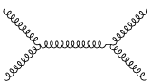
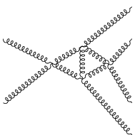

TIKZ-Feynman¶
[1]:
from pyfeyn2.feynmandiagram import FeynmanDiagram, Leg, Propagator, Vertex
from pyfeyn2.render.tikzfeynman import TikzFeynmanRender
from pyfeyn2.render.dot import feynman_adjust_points
---------------------------------------------------------------------------
ModuleNotFoundError Traceback (most recent call last)
Cell In [1], line 1
----> 1 from pyfeyn2.feynmandiagram import FeynmanDiagram, Leg, Propagator, Vertex
2 from pyfeyn2.render.tikzfeynman import TikzFeynmanRender
3 from pyfeyn2.render.dot import feynman_adjust_points
ModuleNotFoundError: No module named 'pyfeyn2'
Simple Case¶
We set the positions of all vertices here.
[2]:
fd = FeynmanDiagram()
v1 = Vertex("v1").set_xy(-1, 0)
v2 = Vertex("v2").set_xy(1, 0)
p1 = Propagator("p1").connect(v1, v2).set_type("gluon")
l1 = Leg("l1").set_target(v1).set_xy(-2, 1).set_type("gluon").set_incoming()
l2 = Leg("l2").set_target(v1).set_xy(-2, -1).set_type("gluon").set_incoming()
l3 = Leg("l3").set_target(v2).set_xy(2, 1).set_type("gluon").set_outgoing()
l4 = Leg("l4").set_target(v2).set_xy(2, -1).set_type("gluon").set_outgoing()
p1.set_source(v1)
p1.set_target(v2)
fd.propagators.append(p1)
fd.vertices.extend([v1, v2])
fd.legs.extend([l1, l2, l3, l4])
[3]:
tfd = TikzFeynmanRender(fd)
print(tfd.get_src())
\documentclass[preview,crop,tikz]{standalone}%
\usepackage[T1]{fontenc}%
\usepackage[utf8]{inputenc}%
\usepackage{lmodern}%
\usepackage{textcomp}%
\usepackage{lastpage}%
%
\RequirePackage{luatex85}%
\usepackage[compat=1.1.0]{tikz-feynman}%
%
\begin{document}%
\normalsize%
\begin{tikzpicture}
\begin{feynman}
\vertex (v1) [label=] at (-1.0,0.0);
\vertex (v2) [label=] at (1.0,0.0);
\vertex (l1) [label=] at (-2.0,1.0);
\vertex (l2) [label=] at (-2.0,-1.0);
\vertex (l3) [label=] at (2.0,1.0);
\vertex (l4) [label=] at (2.0,-1.0);
\diagram*{
(v1) -- [gluon] (v2),
(l1) -- [gluon] (v1),
(l2) -- [gluon] (v1),
(v2) -- [gluon] (l3),
(v2) -- [gluon] (l4),
};
\end{feynman}
\end{tikzpicture}
%
\end{document}
[4]:
tfd.render("test.pdf")

[4]:
Complicated Case¶
We only set the positions of the Legs here.
[5]:
fd = FeynmanDiagram()
v1 = Vertex("v1")
v2 = Vertex("v2")
v3 = Vertex("v3")
v4 = Vertex("v4")
p1 = Propagator("p1").connect(v1, v2).set_type("gluon")
p2 = Propagator("p2").connect(v1, v3).set_type("gluon")
p3 = Propagator("p3").connect(v3, v2).set_type("gluon")
p4 = Propagator("p4").connect(v4, v3).set_type("gluon")
p5 = Propagator("p5").connect(v4, v2).set_type("gluon")
l1 = Leg("l1").set_target(v1).set_type("gluon").set_incoming().set_xy(-2, 1)
l2 = Leg("l2").set_target(v1).set_type("gluon").set_incoming().set_xy(-2, -1)
l3 = Leg("l3").set_target(v2).set_type("gluon").set_outgoing().set_xy(2, -2)
l4 = Leg("l4").set_target(v3).set_type("gluon").set_outgoing().set_xy(2, 2)
l5 = Leg("l5").set_target(v4).set_type("gluon").set_outgoing().set_xy(2, 1)
l6 = Leg("l6").set_target(v4).set_type("gluon").set_outgoing().set_xy(2, -1)
fd.propagators.extend([p1, p2, p3, p4, p5])
fd.vertices.extend([v1, v2, v3, v4])
fd.legs.extend([l1, l2, l3, l4, l5, l6])
Now calculate the positions of vertices.
[6]:
ffd= feynman_adjust_points(fd)
[9]:
TikzFeynmanRender(ffd).render()

[9]:
[8]:
from pyfeyn2.render.dot import DotRender, feynman_to_dot
fd = FeynmanDiagram()
v1 = Vertex()
v2 = Vertex()
v3 = Vertex()
v4 = Vertex()
v5 = Vertex()
v6 = Vertex()
p1 = Propagator().connect(v1, v2).set_type("gluon")
p2 = Propagator().connect(v2, v3).set_type("gluon")
p3 = Propagator().connect(v1, v4).set_type("gluon")
p4 = Propagator().connect(v2, v5).set_type("gluon")
p5 = Propagator().connect(v3, v6).set_type("gluon")
p6 = Propagator().connect(v5, v6).set_type("gluon")
p7 = Propagator().connect(v4, v5).set_type("gluon")
p8 = Propagator().connect(v4, v6).set_type("gluon")
l1 = Leg().set_target(v1).set_type("gluon").set_incoming().set_xy(-2, 0)
l2 = Leg().set_target(v3).set_type("gluon").set_outgoing().set_xy(2, 0)
fd.propagators.extend([p1, p2, p3, p4, p5, p6, p7, p8])
fd.vertices.extend([v1, v2, v3, v4, v5, v6])
fd.legs.extend([l1, l2])
print(feynman_to_dot(fd))
ffd= feynman_adjust_points(fd)
TikzFeynmanRender(ffd).render()
graph G {
rankdir=LR;
layout=neato;
node [style="invis"];
[ pos="-2.0,0.0!"];
[ pos="2.0,0.0!"];
edge [style="decorate,decoration=coil,aspect=0.3,segment length=1mm"];
Vertex0 -- Vertex1;
edge [style="decorate,decoration=coil,aspect=0.3,segment length=1mm"];
Vertex1 -- Vertex2;
edge [style="decorate,decoration=coil,aspect=0.3,segment length=1mm"];
Vertex0 -- Vertex3;
edge [style="decorate,decoration=coil,aspect=0.3,segment length=1mm"];
Vertex1 -- Vertex4;
edge [style="decorate,decoration=coil,aspect=0.3,segment length=1mm"];
Vertex2 -- Vertex5;
edge [style="decorate,decoration=coil,aspect=0.3,segment length=1mm"];
Vertex4 -- Vertex5;
edge [style="decorate,decoration=coil,aspect=0.3,segment length=1mm"];
Vertex3 -- Vertex4;
edge [style="decorate,decoration=coil,aspect=0.3,segment length=1mm"];
Vertex3 -- Vertex5;
edge [style="decorate,decoration=coil,aspect=0.3,segment length=1mm"];
-- Vertex0;
edge [style="decorate,decoration=coil,aspect=0.3,segment length=1mm"];
Vertex2 -- ;
{rank=min; }
{rank=max; ;}
}
---------------------------------------------------------------------------
ParseException Traceback (most recent call last)
Cell In [8], line 27
25 fd.legs.extend([l1, l2])
26 print(feynman_to_dot(fd))
---> 27 ffd= feynman_adjust_points(fd)
28 TikzFeynmanRender(ffd).render()
File ~/data/de.neuwirthinformatik.Alexander/Development/git/pyfeyn2/pyfeyn2/render/dot.py:21, in feynman_adjust_points(feyndiag, size)
19 norm = size
20 dot = feynman_to_dot(fd)
---> 21 positions = dot_to_positions(dot)
22 max = 0
23 for i, p in positions.items():
File ~/data/de.neuwirthinformatik.Alexander/Development/git/pyfeyn2/pyfeyn2/render/dot.py:39, in dot_to_positions(dot)
38 def dot_to_positions(dot):
---> 39 return dot2tex.dot2tex(dot, format="positions")
File ~/.cache/pypoetry/virtualenvs/pyfeyn2-CEvJ4jFG-py3.9/lib/python3.9/site-packages/dot2tex/__init__.py:62, in dot2tex(dotsource, **kwargs)
55 def dot2tex(dotsource, **kwargs):
56 """Process dotsource and return LaTeX code
57
58 Conversion options can be specified as keyword options. Example:
59 dot2tex(data,format='tikz',crop=True)
60
61 """
---> 62 return d2t.convert_graph(dotsource, **kwargs)
File ~/.cache/pypoetry/virtualenvs/pyfeyn2-CEvJ4jFG-py3.9/lib/python3.9/site-packages/dot2tex/dot2tex.py:3125, in convert_graph(dotsource, **kwargs)
3122 del kwargs['preproc']
3124 options.__dict__.update(kwargs)
-> 3125 tex = main(True, dotsource, options)
3126 return tex
File ~/.cache/pypoetry/virtualenvs/pyfeyn2-CEvJ4jFG-py3.9/lib/python3.9/site-packages/dot2tex/dot2tex.py:3075, in main(run_as_module, dotdata, options)
3073 sys.exit(1)
3074 try:
-> 3075 s = conv.convert(dotdata)
3076 log.debug('Output:\n%s', s)
3077 if options.autosize:
File ~/.cache/pypoetry/virtualenvs/pyfeyn2-CEvJ4jFG-py3.9/lib/python3.9/site-packages/dot2tex/dot2tex.py:770, in DotConvBase.convert(self, dotdata)
767 def convert(self, dotdata):
768 # parse data processed by dot.
769 log.debug('Start conversion')
--> 770 main_graph = parse_dot_data(dotdata)
772 if not self.dopreproc and not hasattr(main_graph, 'xdotversion'):
773 # Older versions of Graphviz does not include the xdotversion
774 # attribute
775 if not (dotdata.find('_draw_') > 0 or dotdata.find('_ldraw_') > 0):
776 # need to convert to xdot format
777 # Warning. Pydot will not include custom attributes
File ~/.cache/pypoetry/virtualenvs/pyfeyn2-CEvJ4jFG-py3.9/lib/python3.9/site-packages/dot2tex/dot2tex.py:242, in parse_dot_data(dotdata)
240 parser = dotparsing.DotDataParser()
241 try:
--> 242 graph = parser.parse_dot_data(dotdata)
243 except dotparsing.ParseException:
244 raise
File ~/.cache/pypoetry/virtualenvs/pyfeyn2-CEvJ4jFG-py3.9/lib/python3.9/site-packages/dot2tex/dotparsing.py:599, in DotDataParser.parse_dot_data(self, data)
596 ndata = data.replace('\\\n', '')
597 # lines = data.splitlines()
598 # lines = [l.rstrip('\\') for l in lines]
--> 599 tokens = self.dotparser.parseString(ndata)
600 self.build_top_graph(tokens[0])
601 return self.graph
File ~/.cache/pypoetry/virtualenvs/pyfeyn2-CEvJ4jFG-py3.9/lib/python3.9/site-packages/pyparsing/core.py:1141, in ParserElement.parse_string(self, instring, parse_all, parseAll)
1138 raise
1139 else:
1140 # catch and re-raise exception from here, clearing out pyparsing internal stack trace
-> 1141 raise exc.with_traceback(None)
1142 else:
1143 return tokens
ParseException: Expected '}', found '[' (at char 61), (line:5, col:4)
[ ]: